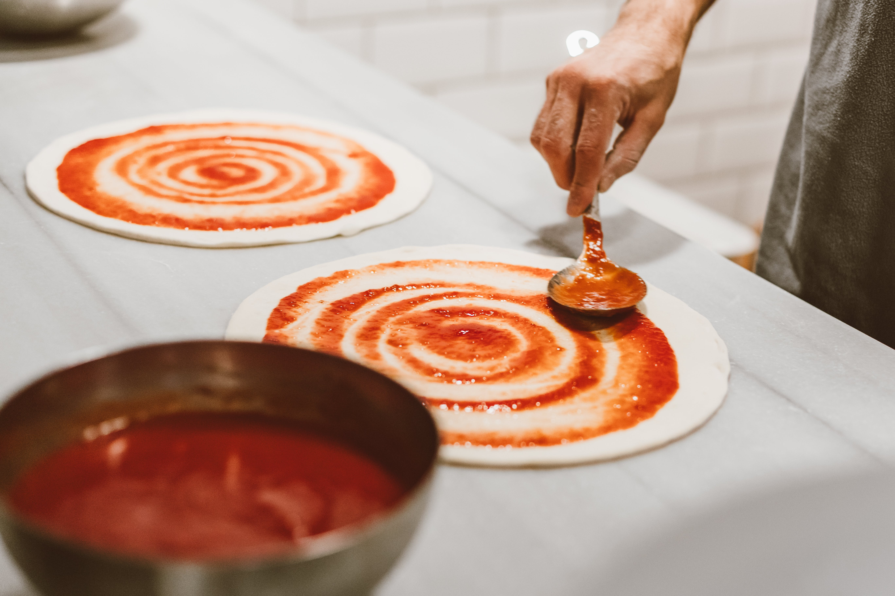

Pizza Sauce

Pizza Sauce
The ideal pizza sauce for enhancing the flavour of your Classic Pizza Dough base.
ingredients:
- 2 tablespoons extra-virgin olive oil.
- 2 garlic cloves, crushed or finely chopped.
- 800g canned whole plum tomatoes.
- 2 teaspoons sugar, heaped.
- 1 teaspoon salt.
- Handful of basil leaves, roughly chopped.
- Pinch of freshly ground black pepper.
Steps:
- Place the oil in a pan over medium heat. When warm, add the garlic and cook until softened but not brown (not more than a minute).
- Pour the can of plum tomatoes into a bowl and use a masher or fork to break them apart and crush them down. Pour the tomatoes into the pan.
- Add all the remaining ingredients, then simmer on low heat for 20 minutes, or until the flavour has deepened and the sauce has thickened slightly.
- This sauce can be used straight away, or placed in an airtight container and stored in the fridge for up to a week, ready to be used as required.